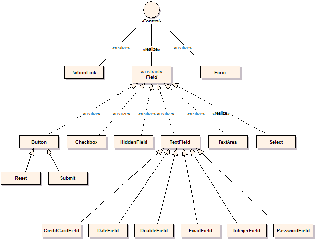

HTML Controls
Click provides a number of HTML controls which support server side processing.
HTML Objects
The major net.sf.click.html package objects are:
- ActionLink
- which provides an <a> href attribute which can call command
methods
- Form
- which provides Form processing and validation
- Field
- which provides Form processing and validation

Class Diagram
ActionLink,
which is a which can call a
command method, and the
Form
component and the
Field
components contained within it.